I'm a cross-functional UX Designer & Accessibility Specialist
Empowering users with inclusive design solutions
Portfolio
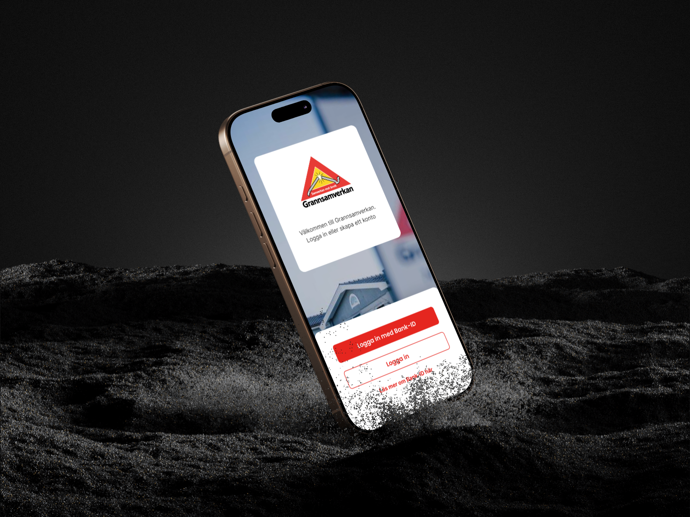
About
Hello!
I am an experienced UX designer and accessibility specialist with over five years of experience and a CPACC certificate. My passion lies in creating inclusive, user-centered solutions that work for everyone.
I thrive in cross-functional teams, integrating insights from developers, stakeholders, and end users to ensure each project is adaptable and impactful. My goal is to design experiences that are functional, accessible, efficient, customizable, and valuable for all users.
I’m also incurably curious about life—anything I don’t know, I have to look up. This curiosity has definitely influenced my work, and might just be the reason I ended up getting certified in accessibility.
Organisations I've worked with: Svenskt Vatten, Svenska Kennelklubben, Stöldskyddsföreningen, LRF Samköp, Nordiska, Tryggare Sverige, Nordic Health Innovation, Region Västerbotten, Statens Veterinärmedicinska Anstalt.
Industry areas: Healthcare, energy, agriculture, finance, security, construction.
I had the pleasure of working with Svenskt Vatten, an industry organisation that supports water and sewage organisations across Sweden, in their work to develop a new website.
My role as a UX designer and accessibility expert was to lead the entire design process, with a focus on user-centred design, accessibility, and creating an inclusive interface.
Summary
This project focused on creating an intuitive, modern, and accessible website for Svenskt Vatten. By collaborating closely with the client, we redefined their goals,
simplified navigation, and made their education offerings more visible. Accessibility and user-centered design were priorities throughout, resulting in a dynamic,
inclusive site that meets WCAG 2.2 standards.
Key Achievements:
Developed clear goals and tailored the website to diverse audiences.
Created a new Information Architecture and detailed wireframes.
Ensured full accessibility compliance and agile collaboration.
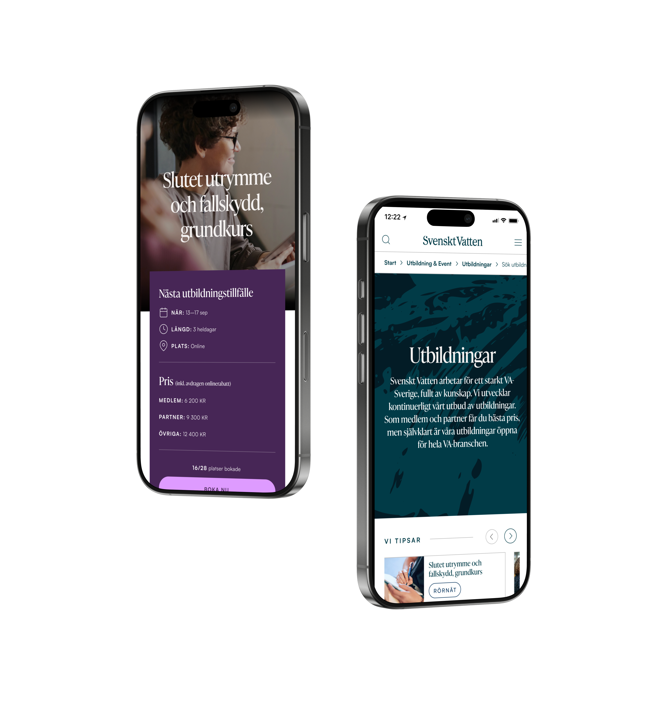
My process
Throughout the process, I had one key focus: to work closely with the client and guide them through the process, so they felt confident and heard. This resulted in a close
collaboration and a better understanding on both sides. A challange during the project was the switch of visual designer, which led to a new visual designer being onboarded
quickly. This process was helped by close collaboration and the clearly defined requirements and wireframes.
Defining & Understanding goals
Throughout the process, I had one key focus: to work closely with the client and guide them through the process, so they felt confident and heard. This resulted in a close
collaboration and a better understanding on both sides. A challange during the project was the switch of visual designer, which led to a new visual designer being onboarded
quickly. This process was helped by close collaboration and the clearly defined requirements and wireframes.
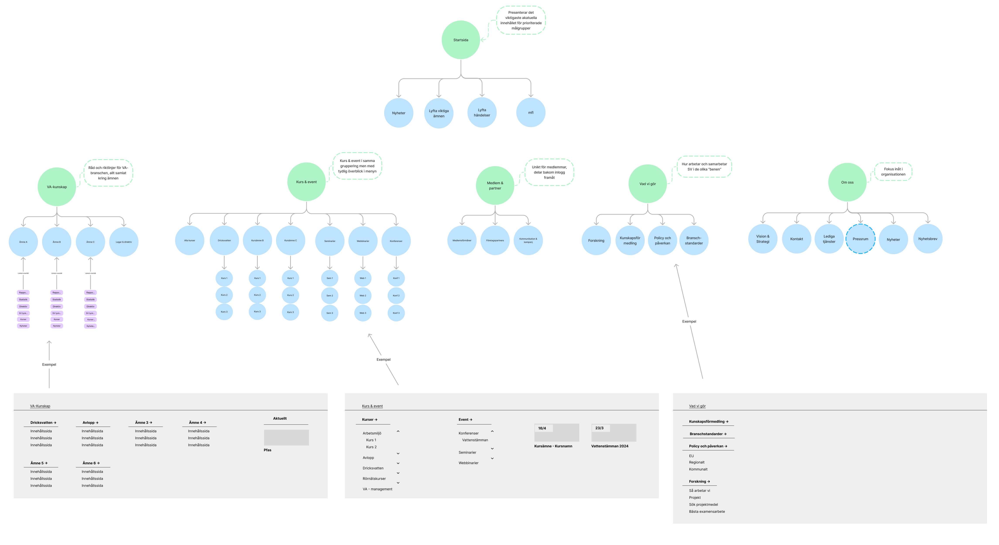
Creating the Information Architecture
The primary focus of the new website was to create a new structure for content and navigation. The client’s profile was scattered and had grown larger over time without a
clear structure. I facilitated several information architecture workshops and iterative working meetings with the client to ensure that requirements and needs for the for
the information architecture were gathered, and that the new structure reflected the client’s impact goals. The information architecture was created in FigJam and became
the base for the project.
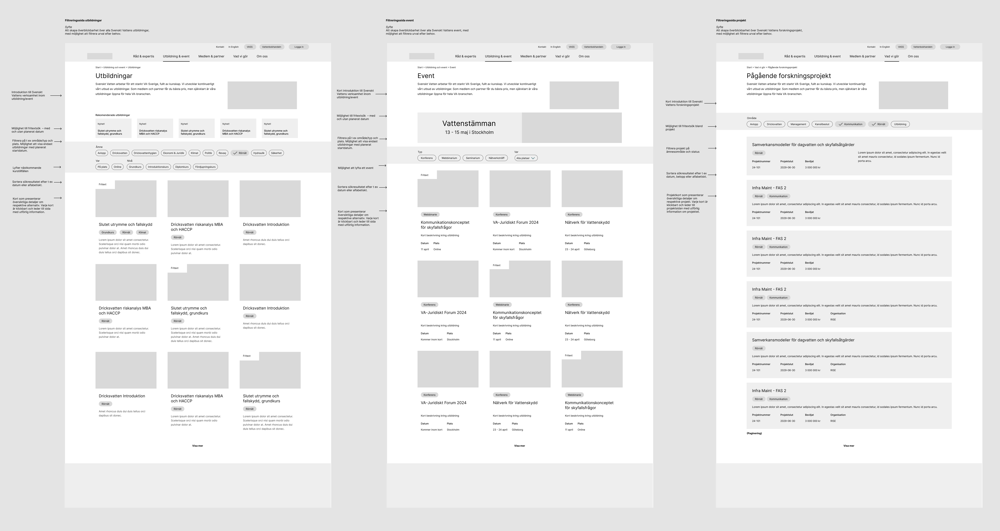
Cross-functionality & Agile Collaboration
Throughout the project, I also led several collaborive meetings in Figma with selected members from the client side to ensure that the right requirements were being collected
for each part of the website, and to verify that the ongoing work on the wireframes aligned with the client’s vision and needs. This resulted in an agile way of working,
that allowed us to make quick decision-making and changing design based on new information.
I created detailed wireframes in Figma, which served as the basis for the development work. These wireframes were carefully designed to reflect the client’s requirements
while focusing on the end users’ needs, resulting in a smooth and intuitive user experience. During the course of the project, there were a reorganisation of the graphic
designers, which made the close collaboration even more important, as we had to quickly onboard new team members and ensure that no requirements or insights were lost
along the way. To maintain an agile workflow and effective communication, I organised regular cross-functional meetings between the design and development teams. These
meetings allowed for continuous feedback, quick problem-solving, and ensured that design and functionality were integrated smoothly and effectively.
Importance of Accessibility
Accessibility was a priority throughout the project, and I acted as the accessibility specialist. I had primary responsibility for ensuring that the website met
current accessibility standards and guidelines, including WCAG 2.2 and EN 301 549. I also carried out testing during and after the development phase to identify
any accessibility issues on an ongoing basis throughout the project.
Deliverables & Result
The result of our work was a dynamic, modern website where all of Svenskt Vatten’s many target groups have a clear place. The website is also designed and coded
to be 100% accessible, and through our work, we created a website that is inclusive and usable for everyone, regardless of disabilities or limitations.
By combining user-centred design with accessibility expertise, we created a website that is intuitive, usable, and inclusive.
I had the pleasure of collaborating with SAMBO and the Swedish Theft Prevention Association to develop a new Neighbourhood Watch (Grannsamverkan) app.
As a UX designer and accessibility specialist, I was responsible for the UX process to create an MVP focused on usability, accessibility, and simplicity.
The goal was to facilitate communication between neighbours and the police while raising awareness of crime prevention measures in residential areas.
Summary
This project focused on designing an MVP for the Neighbourhood Watch app to improve safety and engagement within communities.
I facilitated cross-functional collaboration with stakeholders, developers, and SAMBO to identify user needs through interviews and workshops.
Key goals included preserving existing user groups, raising awareness about the initiative, and enhancing communication between users and the police.
I created wireframes in Figma, conducted accessibility testing to meet WCAG 2.2 standards, and ensured iterative design through agile collaboration. The resulting app enhances community safety and communication, is accessible to all users, and supports iOS and Android platforms.
Key Achievements:
Developed clear goals and tailored the website to diverse audiences.
Created a new Information Architecture and detailed wireframes.
Ensured full accessibility compliance and agile collaboration.
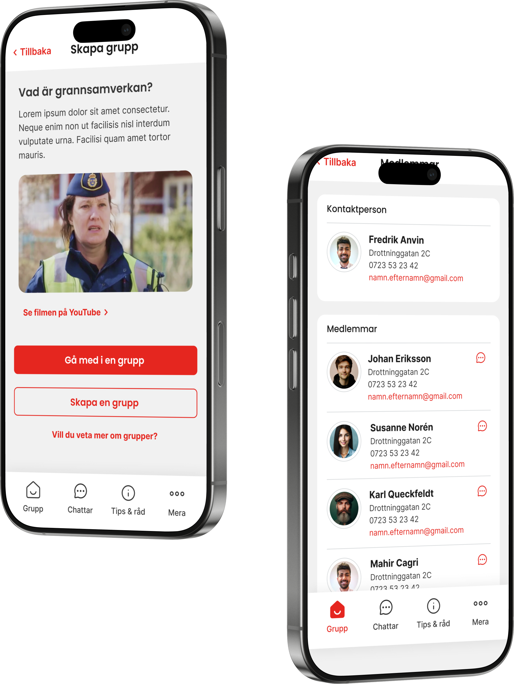
My process
The collaboration was cross-functional, involving iterative processes with developers, project managers, and stakeholders.
I introduced new workflows to streamline teamwork across disciplines and enhanced stakeholders' understanding of both design and accessibility processes.
Defining & Understanding goals
The project began with interviews and workshops to gather insights into the target audience’s needs. There were already an old Neighbourhood watch app that didn't work
well, and from that app we could get data of usage and pain points. I worked closely with SAMBO and the Swedish Theft Prevention Association to understand the users'
challenges and requirements. We interviewed SSF in order to find what complaints they have gotten from the old app, and we interviewed the swedish police in order to
find out both their pain points but also get a greater understanding of ho the police and civil users uses the app. This information formed the basis for a requirements
specification and wireframes that reflected both client and user expectations.
Some pain points that we early identified was:
There is an old app with users that already has groups, and many groups are not even in the app but instead in a mail list. These groups need to be preserved
People don't understand what the initiative Neighbourhood Watch is, and frequently join "fake" groups on Facebook, that doesn't have the police contact that the real Neighbourhood watch has
The engagement in the app is low, which causes the safety-effect of having a Neighbourhood Watch to lower
And thus, the goal of the project became:
Create an MVP that allows people to create and join groups
Allow for existing groups to be moved to the new app, without having to redo their groups
Raise awareness of what the initiative Neighbourhood is and how it actually works by introducing videos in onboarding and news articles in the app
Introduce an easy way to chat within groups, to give users a reason to frequently engage with the app
Allow police to send messages to groups in order to raise the security and, again, give users a reason to frequently engage with the app
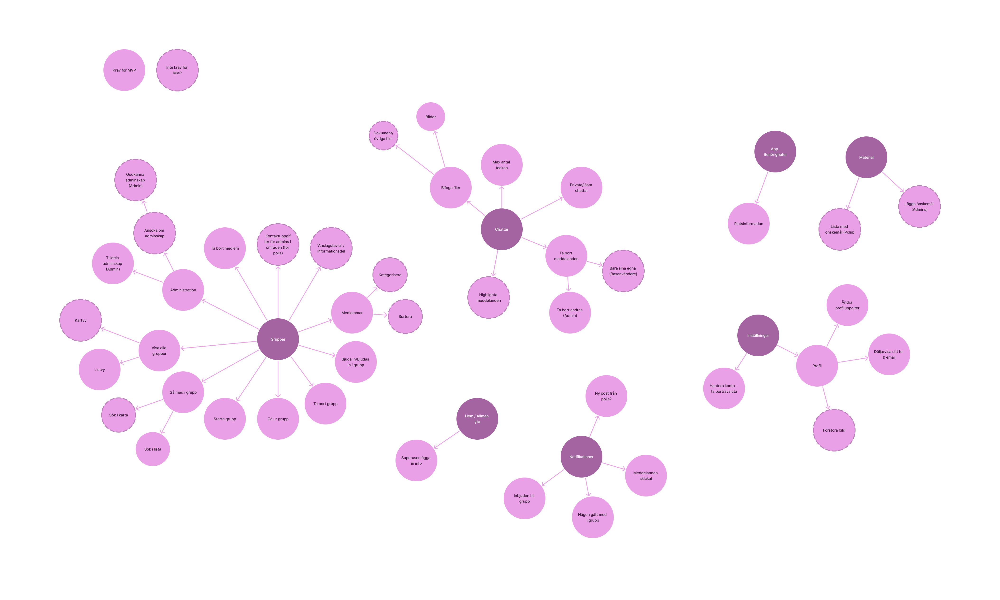
From requirements to wireframes
A key part of the project involved creating intuitive wireframes in Figma. These served as a foundation for development and were designed with a focus on both user needs
and SAMBO’s strategic goals. I developed solutions that made it easy for users to communicate, share information and tips, and access updates on local crime incidents.
Cross-functionality & Agile Collaboration
To ensure efficiency in design and development, I organised regular cross-functional meetings. I continuously collaborated with developers, designers, and SAMBO
to test and validate functionality and design solutions in real-time. Using FigJam, I created user flows that formed the basis for workshops with the client to
ensure understanding and engagement. This agile approach enabled quick iterations and adjustments based on feedback and emerging requirements.
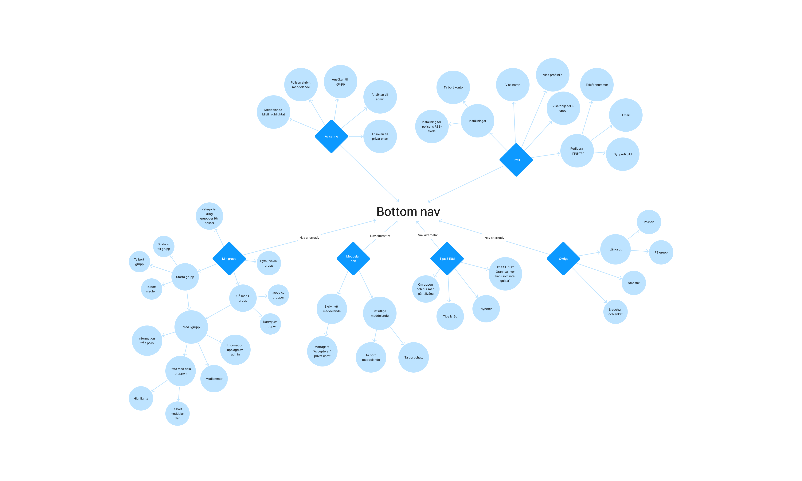
Importance of Accessibility
As the accessibility specialist, I ensured the app complied with WCAG 2.2 and SAMBO’s specific accessibility standards. I conducted continuous testing with screen readers
and other accessibility tools to identify and resolve issues early in the process, resulting in an inclusive app for all users, regardless of disabilities.
Additionally, I provided internal training to my team to enhance their understanding of accessibility and emphasised the importance of integrating it early and
consistently throughout the project.
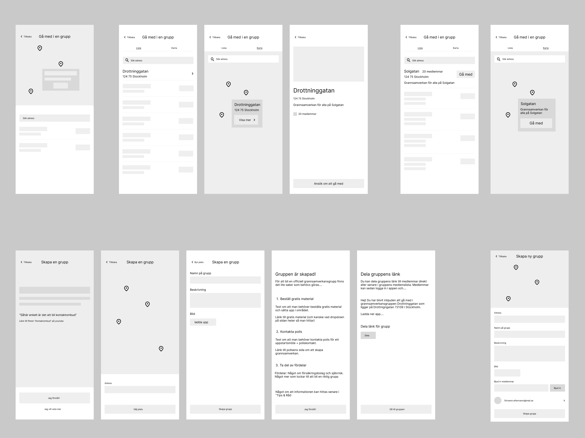
Deliverables & Result
By combining user-centred design and accessibility expertise, we created an MVP for the Neighbourhood Watch app that improves both communication among neighbours and
safety in residential areas. The outcome was an effective and user-friendly app that:
Enhances communication between neighbours and the police
Raises crime prevention awareness with up-to-date local crime information
Builds strong community bonds through collaboration and sharing of information and tips
I had the pleasure of collaborating with SAMBO and the Swedish Theft Prevention Association to develop a new Neighbourhood Watch (Grannsamverkan) app.
As a UX designer and accessibility specialist, I was responsible for the UX process to create an MVP focused on usability, accessibility, and simplicity.
The goal was to facilitate communication between neighbours and the police while raising awareness of crime prevention measures in residential areas.
Summary
This project focused on designing an accessible, informative website for LRF Samköp, aligning with their brand and accommodating both smaller and larger customers. Through cross-functional collaboration, iterative design, and stakeholder engagement, we developed a site that supports effective communication and enhances customer journeys for diverse user groups.
Key Achievements:
Conducted user interviews and workshops to define customer needs and content structure.
Created detailed customer journeys and wireframes to inform the site design.
Designed for accessibility to meet the needs of an older and diverse audience.
Facilitated iterative collaboration using FigJam and Figma for efficient decision-making.
Delivered a website that strengthens LRF Samköp’s brand and supports both small and large customers.
My process
The collaboration has been cross-functional, with iterative processes alongside developers, project managers, and stakeholders.
I have also introduced new workflows for a more structured collaboration between teams and improved stakeholders’ understanding of
the design and accessibility processes.
Background
LRF Samköp operates the brand Samköpsrabatter, aimed at smaller customers, but previously lacked a website for showcasing itself or serving its larger customers.
A significant challenge in the project was to analyze whether larger customers could be accommodated on the existing Samköpsrabatter website or required their own
dedicated space.
Insight Work and User Interviews
The project began with analyzing interview responses previously collected by LRF Samköp from their customers, which served as a foundation for the work ahead.
I also conducted interviews directly with LRF Samköp to understand their needs for a new website and their approach to managing larger customers.
These findings informed the decision to create a new website, accommodating both LRF Samköp’s branding and targeting larger customers
I facilitated three workshop sessions using card sorting to kick-start the creation of a content structure with the client.
The work continued in FigJam, where I developed a visual content structure that was easy for all stakeholders to understand and align with.
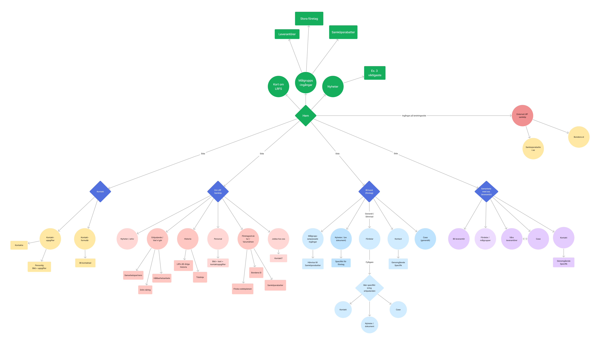
FigJam & Figma as Collaboration Tools
To maintain efficient work sessions with the client, I used both FigJam and Figma. This enabled an iterative and collaborative process where decisions could be made
quickly, and the client stayed actively involved throughout. In addition to the content structure, I created customer journeys in FigJam based on the data gathered
during interviews. These journeys were pivotal in understanding how larger customers would use LRF Samköp's services and informed key decisions on the website's
structure to best support both the organization and its customers.
During the design phase, I held weekly extended meetings with the client to review wireframes and later visual designs, ensuring their requirements and the target
audience's needs were met. This agile approach allowed for quick decision-making and testing of various ideas without delays.
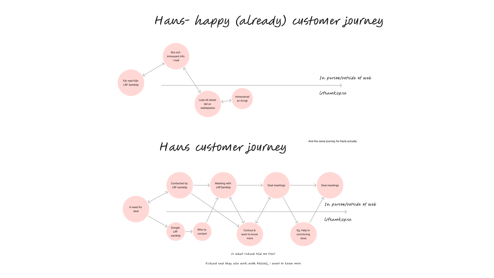
Designing for an Older Audience
LRF Samköp's primary audience consists of older individuals, and the new website is also expected to attract users from diverse companies and roles.
It was therefore crucial to create a website that was both accessible and welcoming. LRF Samköp set the desired level of accessibility, where I provided guidance and
expertise to inform decisions and implement accessible design solutions.
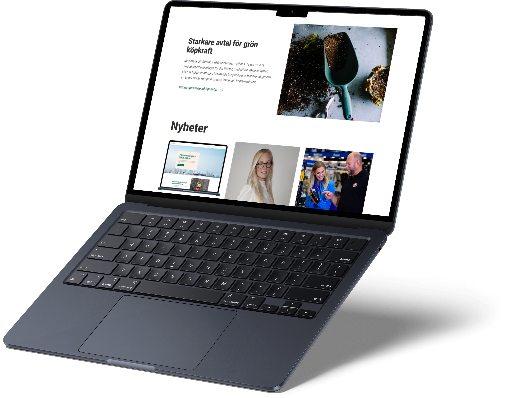
Deliverables & Result
Through an agile design process and accessibility expertise, we created a website for LRF Samköp that aligns with their other brands.
The result is a new and informative website that:
Strengthens LRF Samköp’s brand
Facilitates more effective communication of their mission and member benefits
Serves as a landing page for larger companies, supporting their customer journey